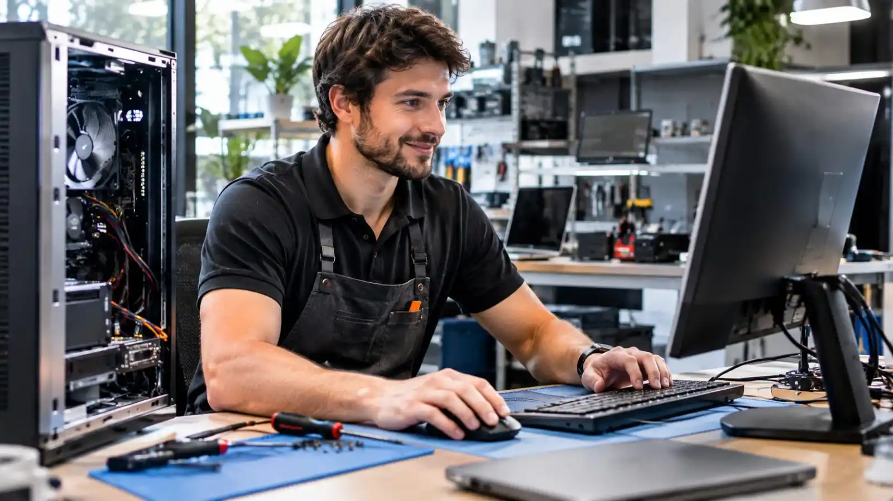

Laptop Display Repair
Laptop Screen Replacement in Ashburn
Cracked or malfunctioning screen? Ask about repair options.
Laptop Display Repair
Cracked or malfunctioning screen? Ask about repair options.
A cracked or malfunctioning laptop screen can make a perfectly usable computer difficult to work with. Common problems include broken glass, colored lines, dark patches, flickering, and blank displays.
Ashburn Computer Repair helps customers identify display problems, check replacement compatibility, and understand repair costs before proceeding.

A damaged screen does not always mean the entire laptop needs replacing. We evaluate the symptoms and determine whether a display panel, cable, or another component may be responsible.
Drops, impacts, and pressure can crack laptop display panels. We assess the damage and identify compatible replacement options.
Intermittent flickering may indicate a damaged panel, cable connection, or graphics-related problem. Troubleshooting helps identify the cause.
A laptop that powers on without displaying an image may have a screen or internal hardware issue. We investigate before recommending replacement.
Colored lines, black patches, and distorted images may indicate panel damage requiring replacement.
| Service | Estimated Cost | Average |
|---|---|---|
| Standard screen replacement | Quote required | Varies by model |
| Touchscreen replacement | Quote required | Varies by assembly |
| Display cable repair | Quote required | Varies by fault |
Final pricing depends on laptop model, replacement part availability, and labor. Estimates are provided after assessing the device.

We check display specifications before recommending replacement components.
We investigate whether the screen itself is responsible for the problem.
We explain expected costs before approved repair work begins.
Share your laptop model and screen symptoms to discuss replacement options.
Free — no obligations

Share your laptop model and screen symptoms.
We assess the damage and possible causes.
We explain replacement options and costs.
Approved repairs are completed and the display is checked.